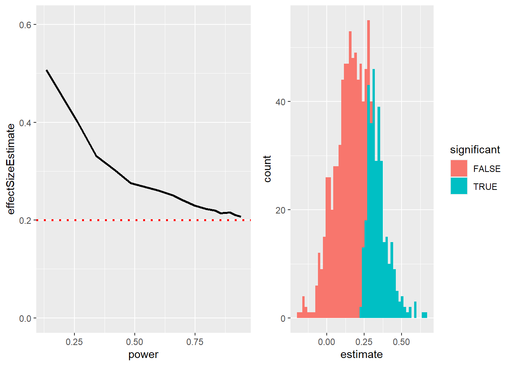

code.sourceCode {
font-size: 1.4em;
}
div.cell-output-stdout {
font-size: 1.4em;
}15 Reproducible Research
Good Research Practices
What is Reproducible Research?
Traditionally, there has been a lot of trust in scientific results. In the last years, however, this trust has decreased, and we know that science may not always work as well (“replication crisis”).
How we Think Science Should Work
- You have a hypothesis
- Branding food with popular characters causes children to choose “healthy” food
- You collect some data
- Children can choose between cookie and apple with either Elmo-sticker or control
- You do statistics (often to test the null hypothesis)
- “The preplanned comparison shows Elmo-branded apples were associated with an increase in a child’s selection of an apple over a cookie, from 20.7% to 33.8% (χ2=5.158; P=.02)” (Wansink, Just, and Payne 2012)
- You make a conclusion based on the data
- Branding can increase healthy choices in young children…
. . .

= scientific cycle
How Science (Sometimes) Actually Works
The example on the last slide summarized a study by Brian Wansink. He was a very popular eating researcher - until in 2017 some researchers looked at his publications more closely and found a lot of inconsistencies and statistical problems. Wansink refused to share the data.
. . .
There was a Buzzfeed article, which reported
The p-value was 0.06, just shy of the gold standard cutoff of 0.05. It was a “sticking point,” as he put it in a Jan. 7, 2012, email. … “It seems to me it should be lower,” he wrote, attaching a draft. “Do you want to take a look at it and see what you think. If you can get the data, and it needs some tweeking, it would be good to get that one value below .05.” …
. . .
Wansink eventually resigned after a number of his papers had been retracted.
The Reproducibility Crisis in Science
In 2015, the paper “Estimating the reproducibility of psychological science”(Open Science Collaboration 2015) was published. It showed that out of 100 published studies with originally 97% significant results, only 37% could be replicated (i.e. were also significant in the replication).
. . .
This was actually predicted already in 2005 in a paper by the (now in-)famous John Ioannidis. In the paper “Why most published research findings are false”, he argued that the use of Null Hypothesis Significance Testing (NHST) will necessarily lead to high levels of false results
Positive Predictive Value and Statistical Significance
Positive Predictive Value (PPV): Statistically significant findings that are actually true. \(P(\text{Effect true | significant result})\)!
Type I error/False positives: How many of the statistically significant findings do we expect to be false? Usually 5% if \(\alpha=0.05\).
Type II error/False negatives: How many of the non-significant findings do we expect to actually be true effects? Usually something like \(\beta=0.20\).
Statistical Power: How likely are we with our study design to actually find a true effect? I.e. if we have a power of 50%, we would only find a true effect at chance level. Power is the inverse of the Type II error: e.g. \(\text{power} = 1\) \(- \beta = .80\).
We can increase power with increasing sample size!
. . .
\[PPV = \frac{P(\text{true positive result})}{P(\text{true positive result}) + P(\text{false positive result})}\]
\[P(\text{true positive result}) = P(\text{H is true}) * Power\]
\[P(\text{false positive result}) = (1 - P(\text{H is true})) * \alpha\]
We don’t know \(P(\text{H is true})\)! But we can assume how likely it is for the specific research field…
. . .
The Winner’s Curse
Effect sizes estimated from a significant result are usually an overestimate of the true effect size!
library(tidyverse)── Attaching core tidyverse packages ──────────────────────── tidyverse 2.0.0 ──
✔ dplyr 1.1.2 ✔ readr 2.1.4
✔ forcats 1.0.0 ✔ stringr 1.5.0
✔ ggplot2 3.4.3 ✔ tibble 3.2.1
✔ lubridate 1.9.2 ✔ tidyr 1.3.0
✔ purrr 1.0.2
── Conflicts ────────────────────────────────────────── tidyverse_conflicts() ──
✖ dplyr::filter() masks stats::filter()
✖ dplyr::lag() masks stats::lag()
ℹ Use the conflicted package (<http://conflicted.r-lib.org/>) to force all conflicts to become errorslibrary(cowplot)
Attache Paket: 'cowplot'
Das folgende Objekt ist maskiert 'package:lubridate':
stamptrueEffectSize=0.2
dfCurse=data.frame(sampSize=seq(20,300,20)) %>%
mutate(effectSize=trueEffectSize,
alpha=0.05)
simCurse = function(df,nruns=1000){
sigResults=0
sigEffects=c()
for (i in 1:nruns){
tmpData=rnorm(df$sampSize,mean=df$effectSize,sd=1)
ttestResult=t.test(tmpData)
if (ttestResult$p.value<df$alpha){
sigResults = sigResults + 1
sigEffects=c(sigEffects,ttestResult$estimate)
}
}
df$power=sigResults/nruns
df$effectSizeEstimate=mean(sigEffects)
return(df)
}
dfCurse = dfCurse %>% group_by(sampSize) %>% do(simCurse(.))
p1 <- ggplot(dfCurse,aes(power,effectSizeEstimate)) +
geom_line(size=1) +
ylim(0,max(dfCurse$effectSizeEstimate)*1.2) +
geom_hline(yintercept = trueEffectSize,size=1,linetype='dotted',color='red')Warning: Using `size` aesthetic for lines was deprecated in ggplot2 3.4.0.
ℹ Please use `linewidth` instead.# single
sampSize=60
effectSize=0.2
nruns=1000
alpha=0.05
df=data.frame(idx=seq(1,nruns)) %>%
mutate(pval=NA,
estimate=NA)
for (i in 1:nruns){
tmpData=rnorm(sampSize,mean=effectSize,sd=1)
ttestResult=t.test(tmpData)
df$pval[i]=ttestResult$p.value
df$estimate[i]=ttestResult$estimate
}
df = df %>%
mutate(significant=pval<alpha) %>%
group_by(significant)
power=mean(df$pval<alpha)
meanSigEffect=mean(df$estimate[df$pval<alpha])
meanTrueEffect=mean(df$estimate)
p2 <- ggplot(df,aes(estimate,fill=significant)) +
geom_histogram(bins=50)
plot_grid(p1, p2)
On the left, you can see that Effect Sizes are especially overestimated for low-power studies (dotted line is true ES). On the right is a histogram showing effect size estimates for a number of samples from a dataset with sign. results shown in blue/non-sign. in red.
This shows us that only if power is high and the effect is large will the ES estimate be close to realistic.
Questionable Research Practices
Bem in “The Compleat Academic: A Career Guide”, (Darley, Zanna, and Roediger 2004)
Which article should you write? There are two possible articles you can write: (1) the article you planned to write when you designed your study or (2) the article that makes the most sense now that you have seen the results. They are rarely the same, and the correct answer is (2).
. .
This is highly problematic!
HARKing: Hypothesizing After the Results are Known - reframing a post-hoc conclusion as an a priori prediction (in which we have stronger faith). Results –> Theory instead of Theory –> Predictions.
. . .
Analyzing data Examine them from every angle. Analyze the sexes separately. Make up new composite indices. If a datum suggests a new hypothesis, try to find further evidence for it elsewhere in the data. If you see dim traces of interesting patterns, try to reorganize the data to bring them into bolder relief. If there are participants you don’t like, or trials, observers, or interviewers who gave you anomalous results,drop them (temporarily). Go on a fishing expedition for something — anything — interesting. No, this is not immoral.
. . .
p-hacking: trying different analyses until one finds a significant result.
-> Increases false positive rate!
HARKing: moving the goalpost so that it ends up wherever the ball goes. Difficult to disconfirm ideas.
p-hacking:
Analyze data after every subject, and stop collecting data once p<.05
Analyze many different variables, but only report those with p<.05
Collect many different experimental conditions, but only report those with p<.05
Exclude participants to get p<.05
Transform the data to get p<.05
Add publication pressure etc. 7 sins?
Questionable Research Practices 2
Doing Reproducible Research
Preregistration
One submits a detailed description of a study (incl. all data analyses) to a trusted, time-stamped repository (osf.io or aspredicted.org).
-> Provides greater transparency and trust that the analyses are not p-hacked or other QRPs were used.
-> Resulted in increase in published non-significant findings.
Reproducible Practices
Simmons, Nelson, and Simonsohn (2011) suggested the following standards for making research more reproducible:
Authors must decide the rule for terminating data collection before data collection begins and report this rule in the article.
Authors must collect at least 20 observations per cell or else provide a compelling cost-of-data-collection justification.
Authors must list all variables collected in a study.
Authors must report all experimental conditions, including failed manipulations.
If observations are eliminated, authors must also report what the statistical results are if those observations are included.
If an analysis include a covariate, authors must report the statistical results of the analysis without the covariate.
Replication
Other researchers should be able to perform the same study and obtain the same result.
. . .
It would be a good practice to replicate your own finding in a new (sufficiently powered) sample. Not every replication will be successful (80% power = 1/5 chance of getting a non-significant finding although there is a true effect!).
A small p-value does not provide stronger evidence for your hypothesis (it is about the probability of the null hypothesis)! (Although a p-value close to .05 is not very strong evidence…).
Doing Reproducible Data Analysis
Replicating another lab’s findings is crucial, but another aspect of reproducibility is to be able to reproduce someone’s analysis on their own data: computational reproducibility.
. . .
For this, it is of course necessary that data and code are openly shared (on e.g. Github, osf.io, Zenodo, OpenNeuro…). Furthermore, scripted analyses, e.g using R, are highly preferred over point-and-click software, because it doesn’t document what was actually clicked (and you can’t comment it - there are some exceptions).
There are a number of ways to make you code even more reproducible, such as using version control (Git) and containers or virtual environments, which ensure e.g. that the same version of the software (and packages etc.) was used.

Thanks!
Learning objectives:
Describe the concept of P-hacking and its effects on scientific practice
Describe the concept of positive predictive value and its relation to statistical power
Describe the concept of pre-registration and how it can help protect against questionable research practices